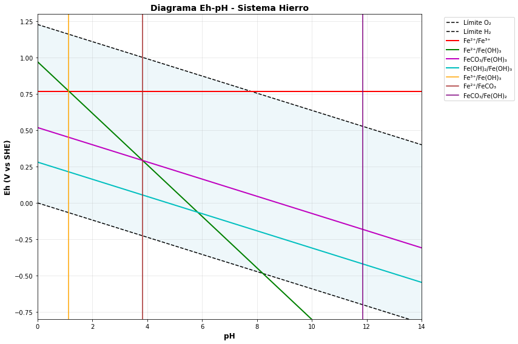

Inorganic Chemistry & Stability Diagrams
Advanced geochemical analysis of mineral species including Eh-pH stability fields, major oxide compositions, and aqueous geochemistry

Pourbaix diagram for the Fe-H₂O system showing iron species stability fields as a function of redox potential (Eh) and pHPourbaix diagrams, also known as Eh-pH diagrams, are fundamental tools in geochemistry and corrosion science. These diagrams map the stability fields of different chemical species as a function of redox potential (Eh) and pH, providing crucial insights into mineral stability and aqueous geochemistry.
Fundamental Concepts:
Eh (Redox Potential): Measured in volts, represents the tendency of a species to gain electrons (reduce) or lose electrons (oxidize). Positive Eh indicates oxidizing conditions, negative Eh indicates reducing conditions.
pH: Measure of hydrogen ion concentration, ranging from acidic (low pH) to alkaline (high pH) conditions.
Stability Fields: Regions where specific aqueous species or minerals are thermodynamically stable.
Construction Methodology:
Half-cell Reactions: Reactions are written with electrons (e⁻) on the left for reduction or right for oxidation
Nernst Equation: E = E° - (RT/nF)ln(Q) - Relates cell potential to reaction quotient
Gibbs Free Energy: ΔG° = -nFE° - Used to calculate standard potentials from thermodynamic data
Mass Action Law: K = [products]/[reactants] - Defines equilibrium constants
Key Boundary Lines:
O₂/H₂O Line: Upper boundary separating oxidizing from reducing conditions (O₂ + 4H⁺ + 4e⁻ → 2H₂O)
H⁺/H₂ Line: Lower boundary at Eh = 0 - (pH dependent): 2H⁺ + 2e⁻ → H₂
Species-Dependent Lines: Lines where iron species transform (Fe²⁺ ↔ Fe³⁺, Fe ↔ Fe²⁺, precipitation reactions)
Iron System Example:
Fe²⁺/Fe³⁺: Fe³⁺ + e⁻ → Fe²⁺ (depends on Eh only, vertical line)
Fe/Fe²⁺: Fe²⁺ + 2e⁻ → Fe (metal dissolution)
Fe(OH)₃ precipitation: Fe³⁺ + 3H₂O ↔ Fe(OH)₃ + 3H⁺ (pH-dependent)
Fe²⁺ stability: Extends into reducing conditions at neutral to alkaline pH
Applications: Corrosion prediction, mineral processing, environmental geochemistry, water-rock interactions, and ore deposit genesis.
This exercise demonstrates how to construct a stability line for the reduction of ferrous iron to metallic iron. This reaction is pH-independent because no hydrogen ions are involved in the balanced equation.
Problem: Calculate the Eh for a solution with [Fe²⁺] = 10⁻⁶ M
This means metallic iron is stable below this Eh value when [Fe²⁺] = 10⁻⁶ M.
This exercise shows how hydrolysis reactions create pH-dependent stability lines. When H⁺ ions appear in the balanced equation, the stability field boundary will be a vertical line on the Eh-pH diagram.
Problem: Calculate the pH where [Fe³⁺] = [FeOH²⁺]
If K = 10⁻³·⁹⁴, then pH = 3.94. Below this pH, Fe³⁺ dominates; above this pH, FeOH²⁺ dominates.
This exercise demonstrates how to use Gibbs Free Energy to calculate equilibrium constants for precipitation-dissolution reactions. These reactions control iron solubility in natural waters.
Problem: Calculate the pH where Fe(OH)₃ dissolves in a solution with [Fe³⁺] = 10⁻⁶ M
This explains why Fe(OH)₃ dissolves in acidic conditions (low pH).